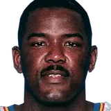

His teams won one title, with the 1996-97 Chicago Bulls. In his 413 games for 5 teams over 8 seasons they went 180–233 (43.6%), −53 games under .500, with an average final finish of 15.1. The biggest one-season rise in his career: the Orlando Magic went from #26 in 1991-92 to #17 in 1992-93.
Jump to: Record by opponent · Season by season · Teammate help
Compare Bison Dele with…
Suggested, same era and similar teammate help:
Final NBA finish, season by season
Title Finals Other playoffs Missed playoffs. #1 = champion; the dashed line is last place that season. Each point opens that season's final standings.
All 29 teams ranked in 1996-97, his best finish (#1)Teammate help
 Michael Jordan16.01 season
Michael Jordan16.01 season Grant Hill7.02 seasons
Grant Hill7.02 seasons Dikembe Mutombo5.01 season
Dikembe Mutombo5.01 season
Career
Career records (W–L, W − L, with and without) include 2026-27 games through Nov. 21, 2026; season counts and finishes are through 2025-26. Each card opens its board in the same scope. How we count.

Latest completed seasons
Season by season
Newest first; every header sorts. Final NBA finish is the team's rank among all teams that season (#1 = champion) and opens that season's standings. "Without him" uses the team-season window; the span line counts only the games between his first and last game for the team.
| 1998-99 | #12 of 29 | 29–21 58.0% | Lost 1st round 2–3 | 49 of 50 | 29–20 59.2% | 0–1 0.0%span: 0–1, gap +59.2 | +59.2 | |
| 1997-98 | #19 of 29 | 37–45 45.1% | Missed playoffs | 78 of 82 | 35–43 44.9% | 2–2 50.0%span: 2–2, gap −5.1 | −5.1 | |
| 1996-97 | #1 of 29 | 69–13 84.1% | Title 4–2 | 9 of 82 | 6–3 66.7% | 63–10 86.3%span: N/A, gap N/A | −19.6 | |
| 1995-96 | LA Clippers11th West | #23 of 29 | 29–53 35.4% | Missed playoffs | 65 of 82 | 24–41 36.9% | 5–12 29.4%span: 2–4, gap +3.6 | +7.5 |
| 1994-95 | #15 of 27 | 41–41 50.0% | Lost 1st round 0–3 | 63 of 82 | 27–36 42.9% | 14–5 73.7%span: 14–5, gap −30.8 | −30.8 | |
| 1993-94 | #8 of 27 | 42–40 51.2% | Lost conf semis 3–4 | 80 of 82 | 41–39 51.2% | 1–1 50.0%span: 1–1, gap +1.2 | +1.2 | |
| 1992-93 | #17 of 27 | 41–41 50.0% | Missed playoffs | 21 of 82 | 10–11 47.6% | 31–30 50.8%span: 23–24, gap −1.3 | −3.2 | |
| 1991-92 | #26 of 27 | 21–61 25.6% | Missed playoffs | 48 of 82 | 8–40 16.7% | 13–21 38.2%span: 8–18, gap −14.1 | −21.6 |
On/off, starts and close games
From the lineup data, 1996-97 on. On/off is net points per 100 possessions with him on the floor minus off, a different unit from the win-rate gaps. Started and off the bench are team records in those games; close games are those within 5 points in the last 5 minutes with him on the floor.
Teammate help by season
Two separate numbers per season, each with every teammate that adds to it. Help this season = Teammates Score points for honors won that season by teammates who shared a game with him. Help coming in = the same teammates' honors from the season before. How help works.
- 1998-99
 Detroit
Grant Hill All-NBA 2nd349 g
Detroit
Grant Hill All-NBA 2nd349 g
Help this season: 3 = 3 Grant Hill
More: help coming in and other teammates
Help coming in (teammates' honors the season before): 4 = 4 Grant Hill
Other teammates (no honors that season): Jerome Williams 49 g, Jud Buechler 49 g, Lindsey Hunter 48 g, Don Reid 46 g, Eric Montross 45 g, Jerry Stackhouse 41 g, Loy Vaught 37 g, Joe Dumars 37 g, Charles O'Bannon 18 g, Christian Laettner 16 g, Khalid Reeves 11 g, Corey Beck 8 g, Mark Macon 7 g, Steve Henson 4 g and 2 more
- 1997-98Detroit
Grant Hill All-NBA 2ndAll-Star477 g
Help this season: 4 = 4 Grant Hill
More: help coming in and other teammates
Help coming in (teammates' honors the season before): 6 = 5 Grant Hill + 1 Joe Dumars
Other teammates (no honors that season): Jerome Williams 73 g, Malik Sealy 73 g, Lindsey Hunter 68 g, Joe Dumars 68 g, Don Reid 64 g, Rick Mahorn 55 g, Jerry Stackhouse 53 g, Grant Long 36 g, Scot Pollard 33 g, Charles O'Bannon 29 g, Theo Ratliff 24 g, Eric Montross 24 g, Aaron McKie 24 g, Steve Henson 20 g
- 1996-97
 Chicago
Michael Jordan Finals MVPAll-NBA 1stAll-StarAll-Def 1st169 g
Chicago
Michael Jordan Finals MVPAll-NBA 1stAll-StarAll-Def 1st169 g Scottie Pippen All-NBA 2ndAll-StarAll-Def 1st59 g
Scottie Pippen All-NBA 2ndAll-StarAll-Def 1st59 g
Help this season: 21 = 16 Michael Jordan + 5 Scottie Pippen
More: help coming in and other teammates
Help coming in (teammates' honors the season before): 28.5 = 22.5 Michael Jordan + 6 Scottie Pippen
Other teammates (no honors that season): Steve Kerr 9 g, Jason Caffey 9 g, Dickey Simpkins 9 g, Luc Longley 9 g, Ron Harper 9 g, Jud Buechler 9 g, Randy Brown 6 g, Robert Parish 5 g, Matt Steigenga 2 g
- 1995-96LA Clippers
 Brent Barry All-Rookie 2nd0.12562 g
Brent Barry All-Rookie 2nd0.12562 g
Help this season: 0.125 = 0.125 Brent Barry
More: help coming in and other teammates
Help coming in (teammates' honors the season before): 0
Other teammates (no honors that season): Terry Dehere 65 g, Lamond Murray 64 g, Bo Outlaw 63 g, Eric Piatkowski 57 g, Malik Sealy 51 g, Rodney Rogers 50 g, Pooh Richardson 46 g, Stanley Roberts 37 g, Keith Tower 28 g, Antonio Harvey 21 g, Logan Vander Velden 15 g
- 1994-95
 Denver
Dikembe Mutombo DPOYAll-StarAll-Def 2nd563 g
Denver
Dikembe Mutombo DPOYAll-StarAll-Def 2nd563 g Jalen Rose All-Rookie 2nd0.12562 g
Jalen Rose All-Rookie 2nd0.12562 g
Help this season: 5.125 = 5 Dikembe Mutombo + 0.125 Jalen Rose
More: help coming in and other teammates
Help coming in (teammates' honors the season before): 0
Other teammates (no honors that season): Rodney Rogers 63 g, Bryant Stith 62 g, Dale Ellis 62 g, Mahmoud Abdul-Rauf 55 g, Reggie Williams 55 g, Tom Hammonds 51 g, Cliff Levingston 40 g, Robert Pack 35 g, Reggie Slater 21 g, Greg Grant 13 g, LaPhonso Ellis 6 g, Mark Randall 3 g, Darnell Mee 2 g
- 1993-94DenverHelp this season: 0, no honored teammate
More: help coming in
Help coming in (teammates' honors the season before): 0.5 = 0.25 Mahmoud Abdul-Rauf + 0.25 LaPhonso Ellis
- 1992-93
 Orlando
Orlando
 Shaquille O'Neal All-StarROYAll-Rookie 1st1.7520 g
Shaquille O'Neal All-StarROYAll-Rookie 1st1.7520 g
Help this season: 1.75 = 1.75 Shaquille O'Neal
More: help coming in and other teammates
Help coming in (teammates' honors the season before): 0
Other teammates (no honors that season): Nick Anderson 21 g, Jeff Turner 21 g, Anthony Bowie 21 g, Donald Royal 20 g, Scott Skiles 20 g, Tom Tolbert 17 g, Greg Kite 13 g, Steve Kerr 12 g, Dennis Scott 10 g, Litterial Green 9 g, Terry Catledge 4 g, Chris Corchiani 4 g
- 1991-92Orlando
Stanley Roberts All-Rookie 2nd0.12528 g
Help this season: 0.125 = 0.125 Stanley Roberts
More: help coming in and other teammates
Help coming in (teammates' honors the season before): 0.5 = 0.25 Scott Skiles + 0.25 Dennis Scott
Other teammates (no honors that season): Scott Skiles 46 g, Terry Catledge 45 g, Jeff Turner 41 g, Greg Kite 41 g, Otis Smith 40 g, Mark Acres 38 g, Sam Vincent 33 g, Nick Anderson 32 g, Anthony Bowie 29 g, Chris Corchiani 28 g, Jerry Reynolds 22 g, Sean Higgins 18 g, Dennis Scott 9 g, Morlon Wiley 1 g
Record against each opponent
- Most playoff series against one franchise: 2 against the Utah Jazz, 1–1 in series and 7–6 in games.
Regular season, through 2025-26 (2026-27 games not included): 413 games, 180–233, against 29 franchises.
Grouped by franchise (named as today); game lists keep each team's name that season. Filters and the tab are kept in the URL, so a filtered view can be shared.
| Games list | |||||||
|---|---|---|---|---|---|---|---|
| 19 | 5–14 | 26.3% | −9 | N/A | 1991-92 to 1998-99 | ||
| 18 | 7–11 | 38.9% | −4 | N/A | 1991-92 to 1998-99 | ||
| 18 | 8–10 | 44.4% | −2 | N/A | 1991-92 to 1998-99 | ||
| 18 | 5–13 | 27.8% | −8 | 0–1 (0–3 in games) | 1991-92 to 1998-99 | ||
| 17 | 7–10 | 41.2% | −3 | N/A | 1991-92 to 1998-99 | ||
| 17 | 8–9 | 47.1% | −1 | 1–0 (4–1 in games) | 1991-92 to 1998-99 | ||
| 17 | 12–5 | 70.6% | +7 | N/A | 1992-93 to 1998-99 | ||
| 17 | 11–6 | 64.7% | +5 | 1–0 (3–0 in games) | 1991-92 to 1998-99 | ||
| 16 | 7–9 | 43.8% | −2 | 1–1 (6–4 in games) | 1991-92 to 1998-99 | ||
| 16 | 5–11 | 31.2% | −6 | N/A | 1991-92 to 1997-98 | ||
| 16 | 8–8 | 50.0% | 0 | N/A | 1991-92 to 1998-99 | ||
| 16 | 8–8 | 50.0% | 0 | N/A | 1991-92 to 1998-99 | ||
| 16 | 7–9 | 43.8% | −2 | N/A | 1991-92 to 1998-99 | ||
| 15 | 7–8 | 46.7% | −1 | N/A | 1991-92 to 1998-99 | ||
| 15 | 5–10 | 33.3% | −5 | N/A | 1991-92 to 1998-99 | ||
| 15 | 2–13 | 13.3% | −11 | 1–1 (7–6 in games) | 1991-92 to 1998-99 | ||
| 14 | 10–4 | 71.4% | +6 | N/A | 1991-92 to 1998-99 | ||
| 14 | 8–6 | 57.1% | +2 | N/A | 1991-92 to 1998-99 | ||
| 14 | 4–10 | 28.6% | −6 | 1–0 (3–2 in games) | 1992-93 to 1998-99 | ||
| 14 | 7–7 | 50.0% | 0 | N/A | 1991-92 to 1997-98 | ||
| 13 | 5–8 | 38.5% | −3 | N/A | 1991-92 to 1997-98 | ||
| 13 | 3–10 | 23.1% | −7 | N/A | 1991-92 to 1997-98 | ||
| 13 | 4–9 | 30.8% | −5 | N/A | 1991-92 to 1997-98 | ||
| 12 | 2–10 | 16.7% | −8 | N/A | 1993-94 to 1998-99 | ||
| 10 | 2–8 | 20.0% | −6 | N/A | 1991-92 to 1996-97 | ||
| 10 | 8–2 | 80.0% | +6 | N/A | 1991-92 to 1997-98 | ||
| 8 | 7–1 | 87.5% | +6 | N/A | 1996-97 to 1998-99 | ||
| 7 | 5–2 | 71.4% | +3 | N/A | 1991-92 to 1997-98 | ||
| 5 | 3–2 | 60.0% | +1 | N/A | 1995-96 to 1997-98 |
Rows add up to his career record in his games. A playoff series counts when he played in it; early round-robin games show as games only. How we count.
Playoffs, with and without him
| 1998-99 | Lost in the first round 2–3 to | #12 of 29 | 5 of 5 | 2–3 40.0% | |
| 1996-97 | Won the title 4–2 over | #1 of 29 | 19 of 19 | 15–4 78.9% | |
| 1994-95 | Lost in the first round 0–3 to | #15 of 27 | 3 of 3 | 0–3 0.0% | |
| 1993-94 | Lost in the conference semifinals 3–4 to | #8 of 27 | 12 of 12 | 6–6 50.0% |
He played every playoff game for these teams, so there is no "without him" record.
Arrival and departure
Team wins per 82 games the season before he arrived vs his first season there, and his last season vs the season after he left. He leaves a team only when his next season with games is for another team (or he never plays again); whole seasons he missed and came back from are one "Missed" row with the team's record without him. Per 82 so short seasons compare fairly. These are team records, not a measure of what he did.
| Left | after 1998-99 | 1998-99: 29–21 47.6 per 82 | 1999-00: 42–40 42.0 per 82 without him | −5.6 wins | |
| Arrived | 1997-98 | 1996-97: 54–28 54.0 per 82 | 1997-98: 37–45 37.0 per 82 | −17.0 wins | |
| Left | after 1996-97 | 1996-97: 69–13 69.0 per 82 | 1997-98: 62–20 62.0 per 82 without him | −7.0 wins | |
| Arrived | 1996-97 | 1995-96: 72–10 72.0 per 82 | 1996-97: 69–13 69.0 per 82 | −3.0 wins | |
| Left | LA Clippers | after 1995-96 | 1995-96: 29–53 29.0 per 82 | 1996-97: 36–46 36.0 per 82 without him | +7.0 wins |
| Arrived | LA Clippers | 1995-96 | 1994-95: 17–65 17.0 per 82 | 1995-96: 29–53 29.0 per 82 | +12.0 wins |
| Left | after 1994-95 | 1994-95: 41–41 41.0 per 82 | 1995-96: 35–47 35.0 per 82 without him | −6.0 wins | |
| Arrived | 1993-94 | 1992-93: 36–46 36.0 per 82 | 1993-94: 42–40 42.0 per 82 | +6.0 wins | |
| Left | after 1992-93 | 1992-93: 41–41 41.0 per 82 | 1993-94: 50–32 50.0 per 82 without him | +9.0 wins | |
| Debut | 1991-92 | 1990-91: 31–51 31.0 per 82 | 1991-92: 21–61 21.0 per 82 | −10.0 wins |
Best duos
Team record in regular-season games both played, top 10 by win %, at least 50 games together.
- Jud Buechler 35–23 60.3%
- Eric Montross 37–32 53.6%
- Don Reid 58–52 52.7%

Joe Dumars 55–50 52.4%- LaPhonso Ellis 43–40 51.8%
- Tom Hammonds 63–60 51.2%
- Jerry Stackhouse 48–46 51.1%
- Jerome Williams 62–60 50.8%
- Grant Hill
63–63 50.0%
- Lindsey Hunter 58–58 50.0%